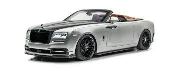
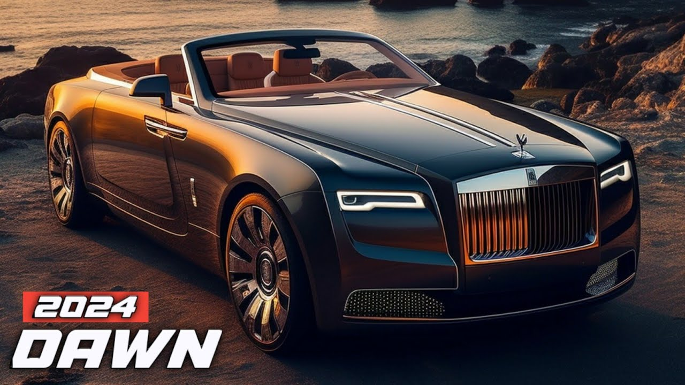
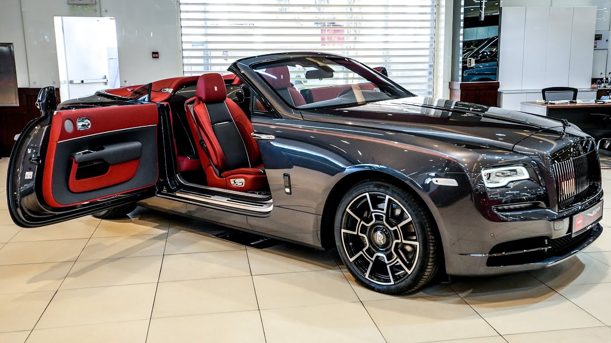

ROLLS-ROYS
- The Dawn was built on the basis of the Rolls-Royce Ghost, unlike the earlier model which was based on the 7th Generation Rolls-Royce Phantom, the flagship car model of Rolls-Royce Motor Cars until the arrival of the 8th Generation and the Rolls-Royce Phantom Coupé.
- The Rolls-Royce Dawn is the last open top combustion car made by Rolls-Royce Motor Cars. Wraith and Dawn are the only remaining Rolls-Royce vehicles using a BMW platform, so their demise was quite
- The Black Badge Dawn is a performance-oriented edition of the Dawn.
- Its exterior features are painted black (including the Spirit of Ecstasy) and has a new rim system.
- The Black Badge marque has also been applied to the Rolls-Royce Cullinan and the Rolls-Royce Wraith
- Unveiled online alongside the Rolls-Royce Wraith Landspeed in June 2021, the Landspeed Edition is a limited version of the Dawn Black Badge made to pay homage to captain
- The exterior and interior designs are inspired by classic open top cars and has a newly redesigned convertible roof that drops down in 22 seconds.
- The interior features new retro-styled applications.
- The production is limited to only 50 cars worldwide.


